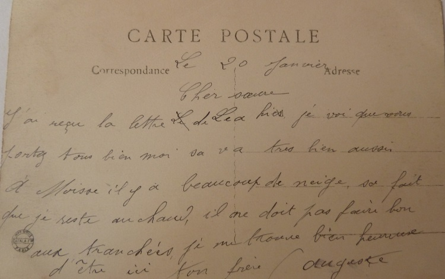

Retour à la maison
Début 1917, nous sommes en Creuse et pour Auguste commence alors un périple à travers le Limousin et le Bourbonnais avant de rejoindre la ferme.
Comme beaucoup d’autres avant lui et après lui, il passe d’hôpital en hôpital, de maison de convalescence en maison de convalescence. Heureusement pour lui, sa blessure peut être soignée mais pour nombre de soldats, leurs blessures sont si sévères qu’elles casseront le cours de leur vie.
Ce retour des blessés graves et ce qu’ils ont vécu est bien décrit dans la ballade ” And the band played waltzing Matilda “. Ecrite par un écossais d’origine australienne, relatant le retour des soldats australiens après la bataille de Gallipoli contre l’armée turque, chantée par un groupe de rock irlandais, et insérée dans ce site qui parle de soldats français face à l’ennemi allemand, cette ballade reflète la peine et les ravages que cette guerre causa dans tous les pays …
Après l’hôpital de Chalons sur Marne, c’est au Château de Moisse près de Bétête que l’on retrouve Auguste. Voici sa première carte, et il a l’air heureux … c’est sans doute vrai qu’il sent à nouveau l’air du pays et voit la même campagne qu’aux Raynauds
Cher Antoine,
J’espère que vous avez fait bon voyage, mois je m’en suis bien tiré.
En arrivant à la gare, le comte nous attendait avec son auto. A six heures on était au château. Nous sommes dix, on est très bien nourris.
Le comte est un bon vieux, il aime beaucoup causer. Il y a deux sœurs pour nous soigner. Je crois que je serai encore mieux qu`à Sainte Foy. De temps en temps, on peut faire quelques promenades en autos.
Pas autre chose à te dire.
Auguste
Ce qu’il y a d’étonnant dans cette guerre, c’est qu’elle vous offre le pire et le meilleur, c’est qu’elle provoque des rencontres inédites, c’est qu’elle croise des destins improbables. Ainsi, Auguste et neuf autres blessés vont vivre la ”vie de château“ pendant quelques semaines sous le regard bienveillant de leur hôte, le Comte Fernand de Beaufranchet.
Il y a beaucoup à dire sur la famille De Beaufranchet … famille de petite noblesse auvergnate originaire d’Ayat sur Sioule ( à guère plus de 25 kms de a Crouzille ), elle compte quelques figures illustres et hautes en couleur.
Ainsi, en 1757 Jacques de Beaufranchet est marié, sur recommendation de Louis XV, à Marie-Louise O’Murphy également connue sous le nom de la belle Morphyse … ses principaux faits d’armes étant d’avoir été l’une des petites maîtresses de Louis XV, et d’avoir finalement attiré l’ire de la Pompadour. Beaufranchet est de bonne réputation mais pauvre, le roi est généreux, et la belle Morphyse est séduisante … tout le monde y trouve donc son compte.
On raconte que Marie-louise avait posé pour La jeune fille allongée de François Boucher et que Louis XV la fit chercher ayant été impressionné par le portrait. Elle resta tout de même 2 ans à Versailles et eut une fille illégitime avec le roi.
La vie de la belle Morphyse est un exemple de pugnacité, jugez-en plutôt par vous-mêmes.
Amable de Beaufranchet, la sœur de Jacques, est quant à elle la mère du général Louis Desaix. Sans doute, l’un des généraux préférés de Napoléon 1er et qui trouva la mort à la bataille de Marengo.
L’un de nos héros auvergnats et fidèle de la première heure de Bonaparte, Louis Desaix s’était également vu confier par celui-ci, la conduite de la Campagne d’Egypte. Il s’illustra notamment par sa victoire contre Mourad Bey et ses Mameluks, à la bataille des Pyramides.
On trouve d’ailleurs encore les graffitis de ses soldats sur les murs du Temple Philae en Haute Egypte …
Mais revenons au Château de Moisse ! Le Comte Fernand de Beaufranchet est le descendant de la branche creusoise de la famille. Il a trois filles dont la plus jeune, Geneviève, est l’épouse d’Octave de Barral.
Octave de Barral est un personnage intéressant. Homme politique, anti-dreyfusard et bonapartiste, il est proche de Charles Maurras. Il crée et préside la fédération parisienne de la ligue d’Action française, parti royaliste aux relents anti-sémitiques.
Homme courageux, il est engagé volontaire après avoir été rejeté plusieurs fois du fait de sa myopie. Il meurt d’une balle en pleine tête dans la nuit du 4 au 5 Août 1915, alors qu’il était sentinelle volontaire en poste avancé.
Charles Maurras écrira son épitaphe dans le journal de l’Action française du 17 Août 1915.
Autres temps, autres idées et autres préjugés … l’autre guerre qui suivra marquera l’infamie de Maurras et ce courant d’idée. Mais pour l’heure, Auguste trouve au Château de Moisse un répit bien mérité.
Comme il l’écrit, le Comte est un bon vieux, un homme sans doute marqué et fier de la perte récente de son gendre, un hôte qui respecte ces soldats et leur sacrifice, un homme qui, trop vieux pour aller à la guerre, ouvre sa maison pour ces blessés.
Au pays, tout le monde est soulagé pour Auguste et le temps leur tarde de le revoir.
Cher Auguste,
Merci beaucoup de ta superbe carte ainsi que tes bons souhaits.
En retour, je t’adresse les miens les plus heureux.
Joyeuse Année, bonne santé et enfin toutes sortes de bonheur.
Reçois aussi nos bonnes affections.
Louise
Cher Auguste,
Depuis quelques jours, je possède ton aimable carte.
Je t’en remercie beaucoup ainsi que de tous les bons souhaits. En retour, accepte les miens bien sincères.
Que cette nouvelle année te soit très favorable. Qu’elle te réserve beaucoup de joie et de bonheur, mais surtout une prompte guérison afin que tu puisses revenir bientôt parmi nous.
Puissent-ils tous se réaliser.
En attendant le plaisir de te revoir, crois toujours en notre bon souvenir.
Affectueusement à toi.
Germaine

Au château de Moisse, la vie s’écoule paisiblement. Bien au chaud et bien soigné, Auguste va bientôt recommencer à marcher avec une canne.
Ma chère petite Léa,
Je t’écris deux mots pour te dire que ça va très bien.
J’espère que ma carte te trouvera de même.
Je marche bien avec les cannes. Ça va très bien. A Moisse, on est toujours bien soigné.
Ces jours, il a tombé de la neige, je reste bien au chaud.
Ton frère. Auguste
Chère filleule,
Je t’écris deux mots ce matin. Je suis toujours en très bonne santé.
J’espère que ma carte te trouvera de même, toujours bien forte.
Cette semaine, il a tombé de la neige mais il n’y en a plus. Ce matin il fait très beau. Cet après-midi, je vas me promener en auto.
Je te dirais que le temps ne me dure pas à Moisse.
Auguste
Cher frère,
J’ai reçu ta lettre hier avec plaisir.
Je te dirais que ça va toujours de mieux en mieux, bientôt je marcherai avec une canne. Le genou marche mieux.
Nous avons eu de la neige mais ces jours, il gèle la journée.
Il fait assez beau, il n’y a pas grand-chose de nouveau à Moisse.
Ton frère qui t’embrasse bien fort.
Auguste
Chère sœur,
J’ai reçu la lettre de Léa hier. Je vois que vous vous portez tous bien.
Moi ça va très bien aussi.
A Moisse, il y a beaucoup de neige. Ça fait que je reste au chaud, il ne doit pas faire bon aux tranchées. Je me trouve bien heureux d’être ici.
Ton frère. Auguste

Fin Février 1917, le séjour à Moisse touche à sa fin. Comme il le fait sans doute avec tous les contingents de blessés qu’il accueille, le Comte fait faire une photographie du groupe de soldats. Une photographie qu’Auguste partage avec la famille.
Chère sœur,
Je t’envoie une carte que le comte a fait à tous, avant que l’on parte de Moisse.
Ce n’est pas très bien car ce jour il y avait de la neige. Tu verras tout de même ma binette.
Je n’ai pas reçu de lettre de Chez Chamard depuis quelques jours, je pense qu’ils sont toujours en bonne santé.
Aujourd’hui il pleut à Guéret mais il ne fait pas froid.
Ton frère qui t’embrasse.
Auguste
Durant le mois de Mars, Auguste reste à Guéret, capitale de la Creuse, en attente de son départ pour Vichy.
Chère sœur,
Tu dois te dire que je t’ai oubliée mais je pense encore souvent à toi ainsi qu`à Léa.
J’aurais bien voulu avoir une petite permission pour assister au service de notre cher Gabriel, mais que veux-tu, on en donne pas.
Ton parrain qui t’embrasse bien fort.
Auguste

Chère sœur,
Je pars Mercredi à 4 heures et demie pour Vichy. J’arriverai à 10 heures et demie, le voyage n’est pas très long.
Je ne passerai pas vous voir ; je peux avoir qu’un jour, ça ne vaut pas la peine.
J’espère que je ne serai pas trop mal.
Ce matin, il fait très beau.
Ton frère. Auguste
Mais avant d’accompagner Auguste à Vichy, attardons-nous un instant sur un autre coin de la Creuse, le camp de la Courtine.
Le camp de la Courtine est sur le plateau de Millevaches et des générations de soldats français y sont passées, et tous ceux qui y sont passés vous diront que là-haut, c’est froid et c’est venteux. Mais en 1917, le camp va accueillir les brigades de soldats russes qui combattent sur le front Ouest.
Ces brigades sont arrivées en France en Avril 1916, l’idée étant alors de reconstituer les effectifs décimés par les 18 mois de guerre. Au total, ce sont environ 20,000 hommes qui vinrent combattre dans les tranchées françaises. Les troupes reflétaient en grande partie celles de l’ensemble de l’armée russe à cette époque : des officiers supérieurs issus de la noblesse russe et serviteurs inconditionnels du Tsar, et des soldats issus de la paysannerie ou de la classe ouvrière de Moscou. En fait, un véritable microcosme de la société russe avec en son sein les idées politiques du moment …
Au printemps 1917, ces soldats qui avaient subit l’enfer des tranchées, et en avril la boucherie de l’offensive Nivelle au Chemin des Dames avaient constitué leurs comités, élus leurs délégués, refusé de continuer à combattre et avaient exigé d’être rapatriés auprès de leurs familles, en Russie où la révolution venait d’éclater.
En Juin 1917, l’Etat major français, effrayé par ces mutineries russes et la contagion éventuelle aux troupes françaises, décida alors de les expédier à l’arrière au camp de la Courtine, loin du front. A noter que les soldats arrivent avec tout leur arsenal, du fusil mitrailleur au mortier de tranchée. Cette photographie mous montre les soldats arrivant à la gare de la Courtine, sur la banderole est inscrit en russe : En avant pour la paix du monde entier !
Le soviet du camp proclame alors le refus de combattre et la demande d’un rapatriement immédiat. Dès lors, les officiers russes ne contrôlent plus la troupe et les soldats sont devenus les véritables maîtres des lieux.
Finalement l’Etat major donne l’ordre d’assaut le 16 Septembre sur les dix milles mutins retranchés dans le camp. L’assaut est mené par une fraction du corps expéditionnaire russe restée sous l’influence de son commandement, avec des unités françaises en soutien.
Ainsi, dans le Limousin, en plein milieu du plateau de Millevaches et à pas plus de 80 kilomètres de la Crouzille, voilà que se joue avant l’heure la révolution russe ! L’assaut du camp de la Courtine se termine le 19 Septembre, les bolcheviks prennent le pouvoir en Russie en Octobre !
Pour mieux comprendre l’histoire de la mutinerie russe, écoutez ce podcast historique sur le sujet.
Début Avril, Auguste envoie des cartes de Vichy où il vient d’arriver … les premières impressions sont bonnes, son traitement va commencer, la ville est agréable …
Cher frère,
J’ai reçu ta carte hier.
J’aurais eu un jour pour aller vous voir mais ça ne valait pas la peine.
Je ne pourrai pas être avec vous pour Dimanche. Ici, on ne donne aucune perme.
Ce matin, j’ai passé à la radio. Je ne sais encore pas si je vais faire de la mécano ou électro.
Ce matin il fait très beau . Vichy est une très belle ville. Quand on n’a pas de visite, on peut sortir de 6 heures du matin à 8 heures du soir. Je crois que le temps passera vite.
Ton frère qui t’embrasse bien fort. Auguste

Chère sœur,
Depuis hier soir, je suis installé dans un autre hôtel. Toujours Hôpital No5, Hôtel des bains Division D. C’est un des plus beaux hôtels de Vichy.
Ce matin j’ai commencé mon traitement. Je commence à 8 heures et demie et à 10 heures je suis libre jusqu’au lendemain. Ce n’est pas pénible, c’est plutôt amusant.
Je vas rester au moins deux mois ici, la réforme se passe à Roanne.
Demain et lundi, il n’y a aucun traitement.
Aujourd’hui il pleut encore, c’est bien un vilain temps.
Reçois chère Maria mille tendresses. Auguste
Comme en atteste cette carte pleine d’humour, les souçis de la guerre sont déjà loin pour Auguste et il est de fort bonne humeur !
Chère sœur,
J’ai reçu ta lettre il y a deux jours. Très heureux d’apprendre vos bonnes nouvelles.
Je vois que vous travaillez toujours beaucoup, mais le beau temps n’a pas duré longtemps. Ces jours, il fait très mauvais.
Je t’envoie la vue des sources où je bois. La Chomel avant la soupe pour l’appétit, et la Mesdames pour mettre dans le vin ! Elles sont à quinze mètres de mon hôtel.
Antoine m’a écrit qu’il viendrait me voir . Je lui ai envoyé une carte signée du Major pour avoir un billet militaire.
Ton frère. Auguste
Il faut dire qu’à l’époque, un séjour à Vichy c’est quelque chose d’inattendu pour un paysan auvergnat. Une bonne vingtaine d’années plus tard, Vichy deviendra tristement célèbre, mais pour l’heure Vichy est l’une des principales destinations thermales en Europe, rivalisant avec Bath en Angleterre ou Baden Baden en Allemagne.
Déjà fréquentée par Madame de Sévigné, Vichy doit sa renommée internationale à Napoléon III qui y séjournera à plusieurs reprises avec son entourage et entraînera une refonte complète de cette petite station thermale. C’est ainsi qu’il sera à l’initiative de la gare, l’église St Louis (incluant un vitrail de Napoléon 1er en figure de saint !), du casino et de nombreux parcs à l’anglaise.
Dans son sillage viendront nombre de figures du monde politique ou des affaires, et des monarques et familles royales du monde entier. Et après Napoléon III, ce sera la Belle Epoque à Vichy, avec une vie culturelle très riche et des hôtels particuliers dans le style de cette période.
La guerre de 14-18 sera une parenthèse et les nombreux hôtels de la ville seront utilisés pour loger les soldats convalescents venant faire une période de ré-éducation. On y pratique d’ailleurs les toutes dernières techniques médicales, électro et mécano thérapies … une expérience qu’Auguste décrit comme amusante dans l’une de ses cartes …
Et puis la guerre passera, curistes et touristes reviendront en masse et Vichy connaîtra une autre période de gloire avec Les Années Folles. Et cette-fois ci, vedettes du cinématographe et artistes en vue viendront se montrer à Vichy … Joséphine Baker, et Ray Ventura à l’affiche du casino !
Ce passage à Vichy a donc certainement quelque chose de magique pour Auguste. C’est clair que ça vaut mieux que les tranchées … et que d’attraper la scarlatine comme le chantera Ray Ventura avec son orchestre au casino de Vichy dans les années trente !!!
Auguste va de mieux en mieux, mais comme on dit par chez nous, le temps lui dure … et il aimerait bien revoir la famille et ses deux chères petites sœurs jumelles.
Chère sœur,
J’ai reçu ta lettre du 18 hier avec le mandat, je te remercie beaucoup.
J’avais assez d’argent pour encore quelques jours, ce n’était pas la peine de me l’envoyer de suite.
Je trouve un peu bizarre que vous avez restés sans nouvelles, je vous ai pourtant écris une carte que vous avez surement pas reçue.
Chère Maria, si Antoine ne vient pas à St Etienne, il peut toujours bien venir me voir avec toi et les petites si elles veulent. Ça vous coûtera pas trop cher. Dans un mois, ce sera encore plus beau. J’aurai un paquet à vous faire emporter.
Arrangez vous pour le mieux et surtout portez pas peine de moi. Le temps passe très vite à Vichy, je me fais pas de bile.
Je t’envoie la vue des sources où je bois tous les jours.
Auguste
Ma chère petite filleule,
Tu dois penser que je t’oublie. Voilà déjà longtemps que je ne t’ai pas écrit.
Je suis toujours en parfaite santé et j’espère que ma présente carte te trouvera de même.
Cette semaine passée il a fait très beau à Vichy. Hier pourtant il a fait orage et ce matin il tombe encore un peu d’eau. Mais ça fait du bien pour faire pousser les récoltes et puis ça radouçit le temps.
Reçois de ton petit parrain un amical bonjour.
Je termine en t’embrassant bien fort.
Auguste
Ma chère petite Léa,
Depuis longtemps je ne t’ai pas écrit, je deviens un peu paresseux.
Je suis toujours en parfaite santé et je désire de tout mon cœur que ma carte te trouve de même.
Hier j’ai reçu la lettre de Maria. Mon traitement va toujours bien, je fais toujours la mecano et en plus 20 minutes de courant électrique depuis 8 jours. Les premiers jours, ça me faisait un peu mal, mais maintenant ça va bien.
Ça fait que le matin je commence à 8 heures et je finis qu`à 10 heures. Ça passe le temps.
Ton frère qui pense souvent à toi et qui t’embrasse.
Auguste
La fin approche, mais Auguste passe la visite médicale et reprend 20 séances de mécano.
Bien cher frère,
Je t’écris deux mots ce matin pour te donner de mes nouvelles.
Je suis toujours en parfaite santé. J’espère que ma carte te trouvera de même et que ton mal au cou est bien passé.
Depuis quelques jours il fait très chaud à Vichy. Je bois souvent de l’eau pour me rafraîchir. Hier j’ai passé une visite. Le Major m’a encore mis 20 séances de plus. Tu vois, ça me fait encore un mois à rester à Vichy.
Je ne suis pas trop mal, mais je serais encore mieux chez nous.
Ton frère qui t’embrasse. Auguste
Dans cette carte, Auguste évoque sa médaille militaire qui lui fût attribuée en Septembre 1916, un mois après sa blessure comme en atteste cet extrait du Journal de marche de son régiment.

Cher frère,
Deux mots ce matin pour te donner de mes nouvelles. Ça va très bien, le moral est déjà meilleur que la semaine dernière. Je vois que ma réforme va bien marcher.
J’espère partir dans peu de temps à Roanne. On m’a enlevé le traitement, je n’ai plus que la petite mécano à l’Hôtel des Bains. J’ai travaillé toute la semaine à l’Hôtel Albert 1er. Hier j’ai passé des bancs en peinture, j’en ai encore pour ce soir et ce sera fini. Je vas me reposer, j’en ai besoin.
J’ai reçu l’argent de ma médaille. Ça m’a fait plus plaisir que le jour qu’on m’a remis la médaille et puis c’est plus intéressant. J’ai commandé ma paire de chaussures, je les aurai dans une quinzaine de jours.
J’espère, au plus tard à la fin du mois, être chez nous si tout continue à bien marcher.
Ton frère. Auguste
Sans doute la carte qu’il lui tardait tant d’écrire, il annonce enfin son retour à la maison.
Chers parents,
Je vous écris deux mots pour vous dire que je suis toujours en parfaite santé. J’espère que ma carte vous trouvera de même.
Vous devez travailler dans le foin, il fait très beau. Je travaille toujours à l’Hôtel. Cette semaine je mange avec le personnel, c’est un peu mieux qu`à l’hopital.
Je pense partir pour Roanne mardi et vers le 10 Juillet, je compte être avec vous si ça marche bien.
Auguste
Mais avant de rentrer et avec l’aide de son frère Antoine, Auguste prends encore le temps de marchander l’achat d’un autre appareil agricole … Cette fois-ci, ça y’est, il est temps pour Auguste de reprendre son vrai métier … celui de Paysan !!!

Cher frère,
J’ai reçu ta lettre dans laquelle tu me parlais du break. Je suis allé le voir, mais je l’ai pas trouvé et puis je pars aujourd’hui à 2 heures pour Roanne. Ça fait que je n’aurais pas le temps de l’expédier.
Le vieux ne veut pas s’en occuper et puis pour 555 , il ne donne pas les trais, alors je laisse tout. Maintenant si tu y tiens, de Roanne je peux venir ici pour l’expédier. On reçoit que le jeudi.
Tu n’as qu‘à m’écrire. Je pense rester 15 jours à Roanne, j’aurai le temps de m’en occuper.
Auguste
Cher frère,
Je t’écris deux mots de St Germain. J’ai deux heures d’arrêt pour Vichy.
J’irai voir le vieux pour le break, je tâcherai de l’acheter s’il y a moyen. Je te téléphonerai pour que tu m’envoie l’argent.
Cher frère, j’ai passé une visite ce soir. Je suis réformé temporaire avec 30 pour cent. C'est pas beaucoup, mais je me trouve encore bien content.
Mercredi soir, tu viendras m’attendre à Lapeyrouse.
Auguste
Des Sillons aux Tranchées